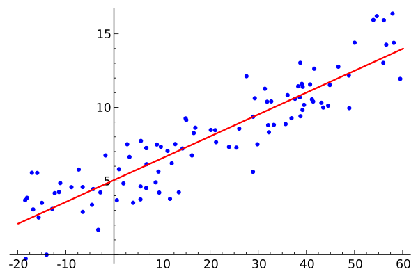
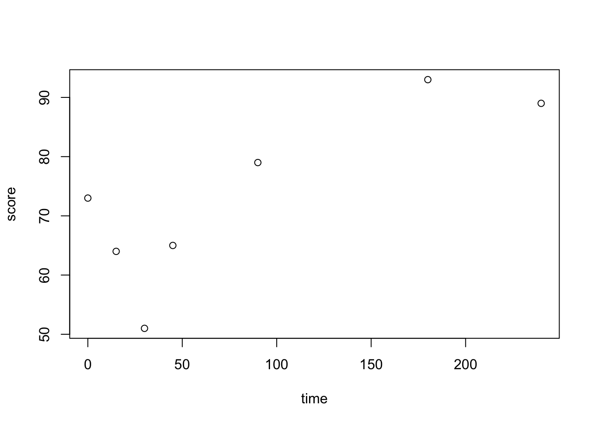
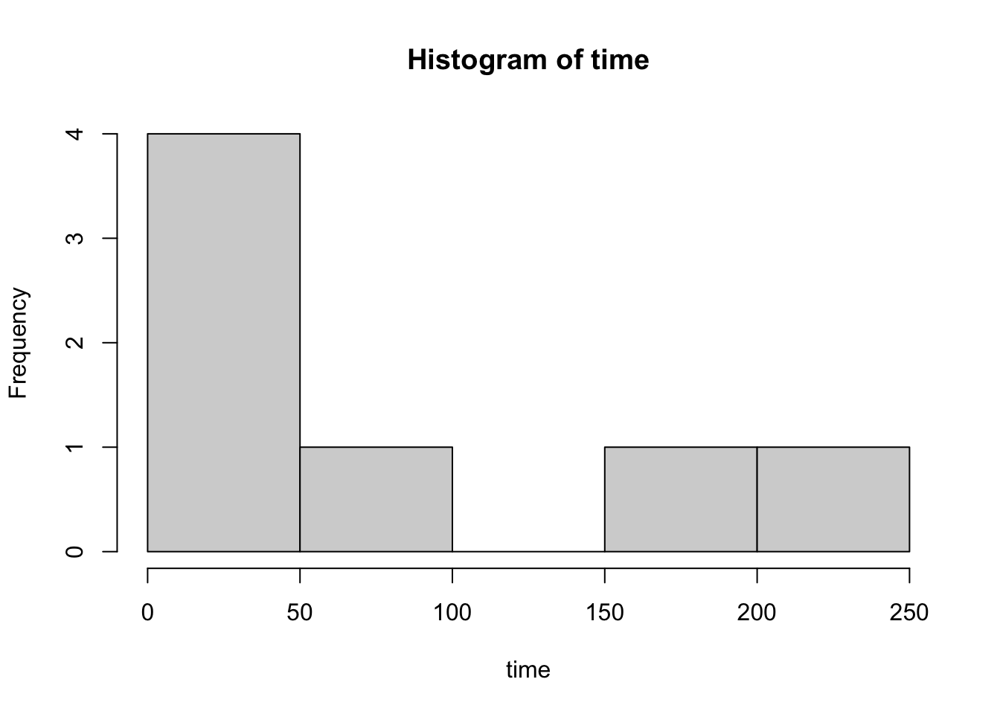
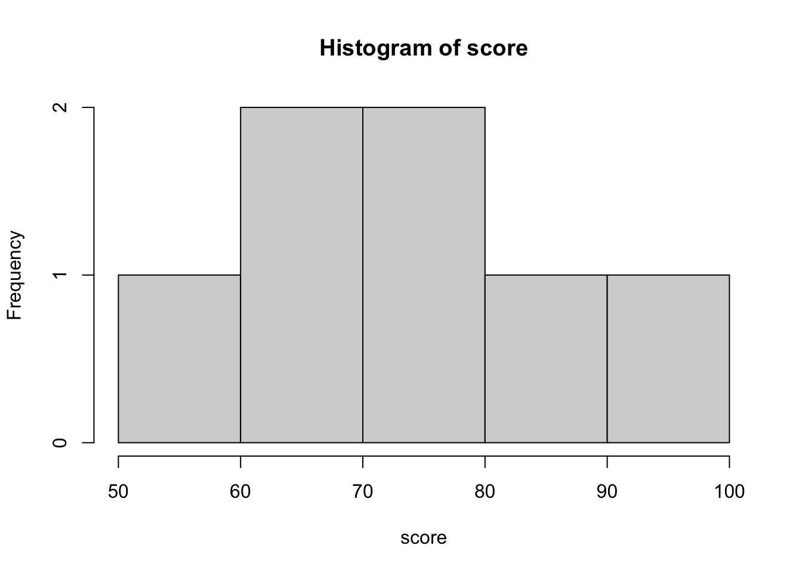

flowchart LR A[X] --> B[Y]
DATA 202 - Week 4
More on theory construction
Part I: Context
More on theory construction
Last week, we considered one cyclical process of theory construction.

This week, we return to this idea of theory construction but with more detail.
Research inquiry
Hypotheses
Analysis
Evaluation
Revision
Research inquiry
– Transfer your reading and informal observations into pratical problems
Hypotheses
– Utilize the research literature to understand your research problem
– Extend this research literature by developing your own research questions
– Based on your research question(s), develop a hypothesis (or a set of hypotheses)
Analysis
– Outline your empirical study in specific details to conduct your analysis
– Conduct your analysis and consider the limitations of your methods
Evaluation
– Evaluate your analytic findings alongside your hypotheses
Revision
– Utilize the reseaerch literature to revise or confirm your hypotheses
Limitations
Across research methodologies, a limitation is any feature of a study that may cause concerns. Limitations vary in both their scope and context. As a result, it is important to consider both the obvious limitations and hidden concerns.
- Some examples of limitations in statistics
- Lack of reliable data
- Limited sample size
- Deficiencies in measurements of data- Not limitations but “bad” statistical practices
- Theory does not depict the entire story or phenomenon
- Old data (and research citations)
- Broad conclusions with no supporting data
- Analyzing data for significant results. P-hacking!Developing a logic model
Logic is an important component in theory construction. Logical reasoning is the use of critical thinking in the applications of statistics. However, logic in relation to theory is based on a set of ideas that help build sound and consistent arguments.
A few key considerations:
Premises and conclusions
– Clear statements are used; statements are focused and direct
Internal structure
– There is consistency in your premises and any conclusions
– There are no contradictions in your structure
Arguments and inferences
– Your argument follow your initial premises, internal structure, and conclusions
Path diagrams
One way to visualize the relationships between your variables is in a path diagram.
Path diagrams are used in path analysis, a subset of statistical methods that help researchers discern and assess the relationship(s) between multiple variables.
Path analysis is based on a closed system of nested relationships.
– These nested relationships must have a logical internal structure.
Together, a path diagram can represent a series of structured linear regression equations.
Path models are often used in economics and political science.
As we move further into our analyses, we will learn more about path analysis.
This is a simple two-variable path diagram
Exercise
Identify two variables for a simple path diagram.
\(X\) (independent variable) and \(Y\) (dependent variable)
What is the logical relationship between the variables?
– Write a logical statement.
What is the question that structures the relationship between the variables?
– Turn your logic statement into a question.
What is your theory on how the two variables relate to one another?
– Write a theoretical statement based on the research literature.
What is your hypothesis?
– Develop an educated guess based on the research literature.
Three variable path diagram
flowchart LR A[Variable 1] --> B[Y] C[Variable 2] --> B
A path diagram made of multiple variables
flowchart LR A[Variable 1] --> B[Y] C[Variable 2] --> B D[Variable 3] --> B
Part II: Content
Our main goal for content this week will be to better frame and understand the relationship between mathematics and statistics. The two concepts are closely related but different in both their form and function.
Understand the role of mathematics in modern statistics
Distinguish between algebra and statistics
Identify basic mathematical terms useful for statistical analysis
Objective 1: Understand the role of mathematics in modern statistics
Statistical data analysis relies on a variety of mathematical models in order to describe and make inferences about the variables in a set of data. In particular, mathematical and statistical models allow us to make predictions about various scientific, social, and other phenomena in the world.
Mathematical statistics is the application of probability, the branch of mathematics concerned with how likely an event is to occur or how true a proposition is, to the field of statistics. Techniques in these field rely on linear algebra, analysis, and a host of other models and equations. It is important to understand these mathematical foundations to engage in critical statistical thinking.

In statistical modeling, regression allows us to estimate the relationship between a dependent variable, \(Y\), and an independent variable, \(X\). The concept of regression is often used for prediction and forecasting. You might notice that the regression line above looks familiar to the linear functions you graphed in your algebra course.
Objective 2: Distinguish between algebra and statistics
At its core, statistics is a branch of applied mathematics.
Statistics developed from various abstract concepts in mathematics
– Many of these concepts were applications of probability theory, which is more abstract.
We refer to statistics as an applied mathematical tool.
We refer to algebra as a pure mathematical tool.
The differences between pure and applied mathematics can be described in many ways.
– However, applied mathematics most often relates to applications in the real world and pure mathematics focuses on abstraction.
The table below presents one example on the difference in how mathematics is used in algebra versus statistics.
We use our knowledge of algebra to build our understanding of statistics.
| In algebra | In statistics |
|---|---|
| \(y=mx + b\) | \(y_i=a+bx_i+\epsilon_i\) |
Objective 3: Identify basic mathematical terms useful for statistical analysis
Today we will consider three terms:
Scientific notation
Subscripts
Summation notation
Scientific notation.
Calculators have a limited number of spaces to report values.
In your calculator, you may have noticed a value containing a capital E
- Some examples are 2.35E4 or 2.35E-4.
This is scientific notation.
The method is instructing you to move the decimal point a certain number of spaces:
– To the right: 2.35E4 is really 2.35 x \(10^{4}\), or 23,500
– To the left: 2.35E-4 is really 2.35 x \(10^{-4}\), or 0.000235
Subscripts.
We use an “\(i\)” to refer to a subscript and to index the position of a value in our data set.
\(x_i\) refers to the i-th entry of a data set, \(X\).
If there are multiple variables (columns) in our data set, say a first variable \(X\) and a second variable is \(Y\), we say that \(x_i\) refers to the i-th entry for variable \(X\) and \(y_i\) refers to the i-th entry of variable \(Y\).
– To do so, we can make use the set of numbers (such as the whole numbers \(\mathbb{Z}^+\) or the positive integers \(\mathbb{Z}^{+}\)) that we reviewed in class.
– If a data set \(X\) contains three values such that \(X = \{9, 5, 12\}\), these values can be denoted using subscripts as: \(x_1 = 9\), \(x_2= 5\), \(x_3 = 12\).
Indexing elements of a data set
In the table below, we can see how subscripts are used to denote the elements of a data set.
| \(X\) | \(Y\) |
|---|---|
| \(x_1\) | \(y_1\) |
| \(x_2\) | \(y_2\) |
| \(x_3\) | \(y_3\) |
| . | . |
| . | . |
| . | . |
| \(x_n\) | \(y_n\) |
Summation notation.
In mathematics, the Greek letter \(\Sigma\) (Sigma) is reserved for summation (addition)
- We may need to sum values or numbers in a data set.
– For example, the notation: \[\sum_{i=1}^{n} x_i \] is used to indicate that we need to add up all of the values (up to \(n\)) for our variable \(X\).
– If we have a total of five rows in our data set, such that \(n=5\) (here \(n \in \mathbb{N}\)), then we can write: \[\sum_{i=1}^{5} x_i = x_1 + x_2 + x_3 + x_4 + x_5\]
– Relatedly, if we wanted to square our values before adding them up, we would write: \[\sum_{i=1}^{n} (x_i)^2 \] This would result in the following expansion if we let \(n=5\) with \(n \in \mathbb{N}\),\[\sum_{i=1}^{5} (x_i)^2 = (x_1)^2 + (x_2)^2 + (x_3)^2 + (x_4)^2 + (x_5)^2\]
Rows and columns
Rows. A row in a data set is generally used to refer to individual observations.
Columns. A column in a data set is generally used to refer to individual variables.
Part III: Code
This week, we will learn to create basic plots using a very small data set on college students’ time spent studying for a statistics exam. Our explorations today will consider the question: Is there a possible relationship between time spent studying for an exam and exam score?
Task 1: Open a new RScript and write a preamble
Prior to conducting any analyses in R, we want to include a brief summmary of our work so that we (and others who read our code) know what we are prioritizing. This is an important step to documenting our research. We will write this preamble at the very top of our RScript file.
A preamble is simply an introduction to your code. The structure of a preamble can vary widely.
In an RScript file, we use hashtags (#) to write certain sections in our preamble. The # symbol informs R that it should ignore that line in our code.
Task 1-a: Write your preamble
# project name: <insert an appropriate title for your project here>
# date created: Sept 12, 2023
# last edited: <as you update your code, keep a record of your last edit>
# author: N. Alexander
# notes: Creating a data frame on college students' time spent studying and exam scoreTask 2: Create a data frame of the observations using vectors
When we do not have raw sample data from an excel or .cvs file available, we can insert data using the data.frame function. As a warm up activity, we will recreate the sample data below by concatenating values into a data.frame
| time | score | grade | textbook |
|---|---|---|---|
| 30 | 51 | F | T |
| 180 | 93 | A | F |
| 45 | 65 | D | F |
| 0 | 73 | C | F |
| 240 | 89 | B | T |
| 15 | 84 | B | T |
| 90 | 79 | C | F |
For this data set, our variables are defined as follows: time = time spent studying (in minutes); score = score on math exam (out of 100); grade = letter grade cooresponding to score; textbook = participant response to the question: “I used my textbook to study”.
Normally, we would want to create a codebook to store this information. More on this soon.
Task 2-a: Here is the sample code to recreate the table above
As you look at the code, try to remember the differences between numeric, character and logic values.
time <- c(30, 180, 45, 0, 240, 15, 90)
score <- c(51, 93, 65, 73, 89, 64, 79)
grade <- c("F", "A","D","C","B","D", "C")
textbook <- c(T, F, F, F, T, T, F)
df <- data.frame(time, score, grade, textbook)
df time score grade textbook
1 30 51 F TRUE
2 180 93 A FALSE
3 45 65 D FALSE
4 0 73 C FALSE
5 240 89 B TRUE
6 15 64 D TRUE
7 90 79 C FALSEThe only values that need quotes ” ” or ’ ’ are character values.
Task 2-b: Take a look at your data frame
We can use View(df) to take a look at the data set we have just created (Notice that the ‘V’ in view is capitalized). This command will open up a new window in RStudio so that you can see how you organized the data.
Task 2-c: See a summary of the variables in the data set
We can use the _summary() command to see a summary of the variables in our data set
summary(df) time score grade textbook
Min. : 0.00 Min. :51.00 Length:7 Mode :logical
1st Qu.: 22.50 1st Qu.:64.50 Class :character FALSE:4
Median : 45.00 Median :73.00 Mode :character TRUE :3
Mean : 85.71 Mean :73.43
3rd Qu.:135.00 3rd Qu.:84.00
Max. :240.00 Max. :93.00 When you look at the summary of the data, what are some of your initial observations?
Task 2-d: Use a few simple commands to visualize your data
We can use plot(IV, DV), where IV = independent variable and DV = dependent variable to create a scatterplot of our variables of interest
plot(time, score)
What are some of your initial ovserations when you look at the visual plot of your data?
We can also create a histogram for a single numeric variable by using the hist( ) command to create quick visual summaries of our data
hist(time)
hist(score)
Next up: Week 5
We will continue with our statistical work and load real-world data into R.